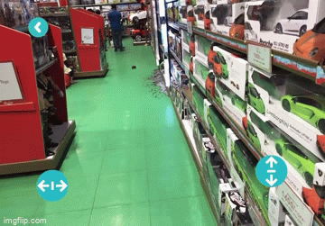
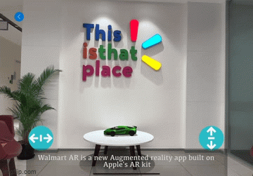
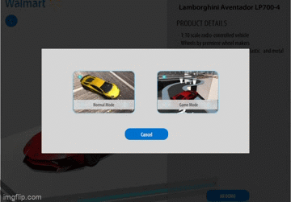
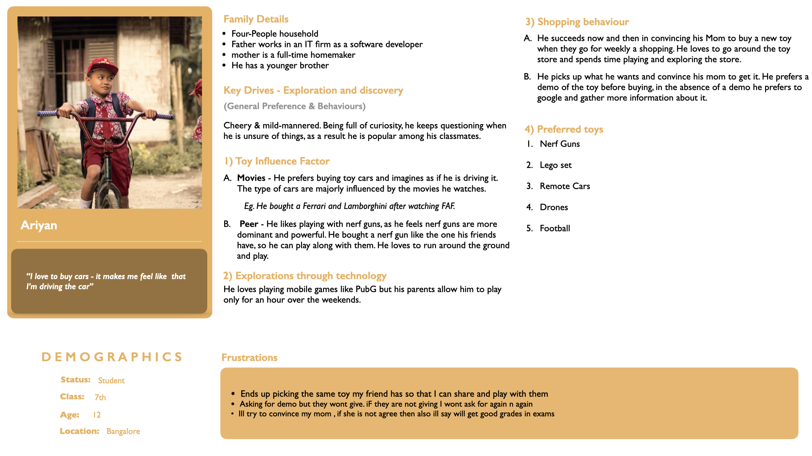
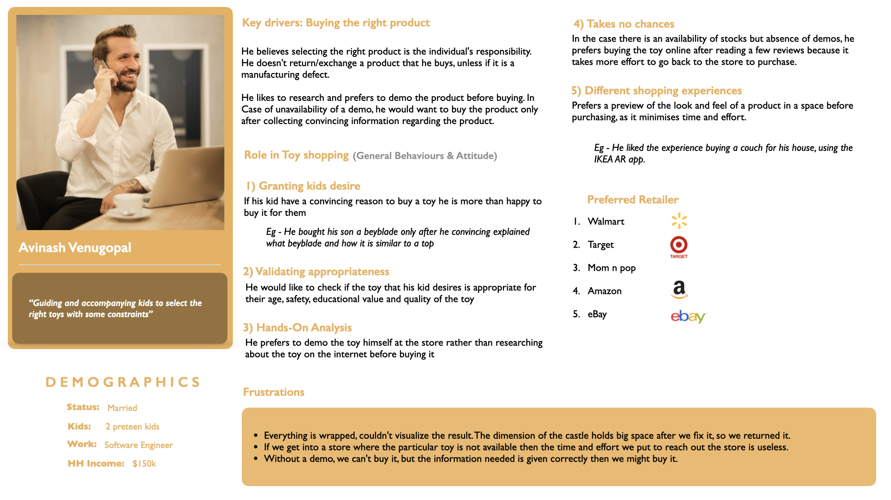
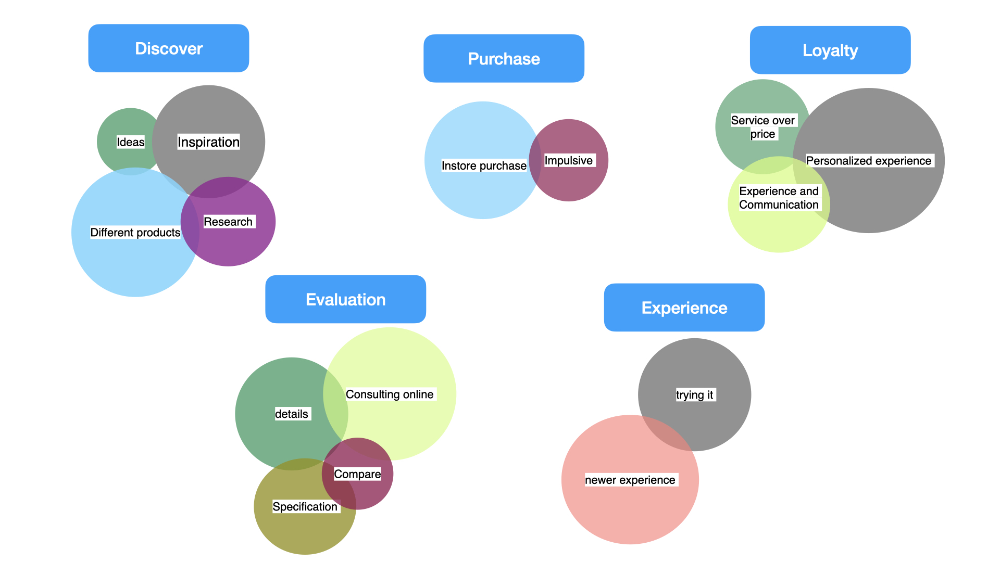

Walmart • AR Experience Design
Transforming Toy Shopping with Augmented Reality

Role
UX/UI Designer
Timeline
Jan - Feb 2024
Team
Aravindh – Myself
Dinoop – Mentor
Ramesh – Global Design Manager
Skills
UX/UI Design
User Research, Market
Prototyping
Overview
Tasked with designing the future of in-store experiences for the next generation, I created an AR-driven solution to transform how customers explore and interact with toys.
Out Comes
See What User Enjoyed
Actual Reality
Customers can experience products in real life from their mobile devices without unpacking them.

Customization
Customers can virtually explore options like colors, features, and functionality

Game VS Function
Users can switch between game mode and function mode to enjoy and evaluate their purchase journey

Impact
The Challenge
Redefining Toy Shopping
Enhancing in-store experiences for families with AR technology to meet evolving customer needs.
Why
Walmart needed to rethink in-store toy shopping for the future.
Design Process
Switch between the tabs below to view the complete design process.
Key Research Activities


Two diff. Persona
Two key personas emerged from our research to represent Walmart's toy shopping audience: parents, who drive purchasing decisions, and kids, who influence the shopping experience.


deriving high-level insights
Affinity Mapping
Through affinity mapping, we synthesized research findings into actionable insights that informed our design decisions.

Key Insights
Final Screens
Form Submission/Login Page
Streamlined login page to onboard users quickly and get them started with the AR shopping experience.

Home Screen
Centralized hub offering options to scan a toy or explore a curated list of available products.

Scan the Toy
AR-enabled surface scanning to accurately place and visualize the toy in any environment.

Product Information Page
Comprehensive product details with customization options, helping parents make informed decisions.

Surface Scanning for Placement
AR-enabled surface scanning to accurately place and visualize the toy in any environment.

Mode Selection Page
Dual-mode selection for parents and kids—Normal for detailed specs or Game Mode for an immersive, playful experience.

Augmented Reality Interaction
Engage with the toy in AR instantly, exploring its features and gameplay without unboxing

Reflection and Retrospect
Starting from the base isn't failure—it's a key to precision in design.
"During the project, my game design background initially created ambiguity in the UX process. By embracing iteration and working closely with mentors, I refined my approach to create a solution that was both user-centered and aligned with business goals."
Data-backed design turns concepts into compelling stories.
This project reinforced that, as a designer, gut feelings are not enough. Validating every decision with research and insights not only strengthens your story but gains the trust of stakeholders and users alike.